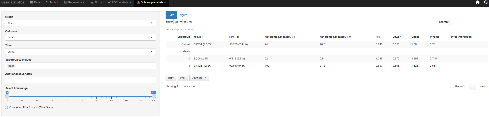

Introducing Basic statistics of jsmodule
Jinseob Kim
2025-01-08
Source:vignettes/jsmodule_subgroup_cmprsk.Rmd
jsmodule_subgroup_cmprsk.RmdSubgroup Analysis
Subgroup analysis for Cox regression is available by selecting the event, time, group, and subgroup variables.


Competing risk analysis
Competing risk analysis can be performed by selecting the regression tab and choosing the Cox model. After clicking on “Competing Risk Analysis,” select the competing risk and competing time variables to display results using the Fine-Gray method